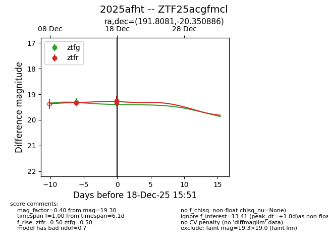
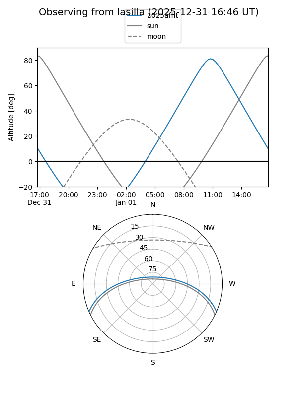
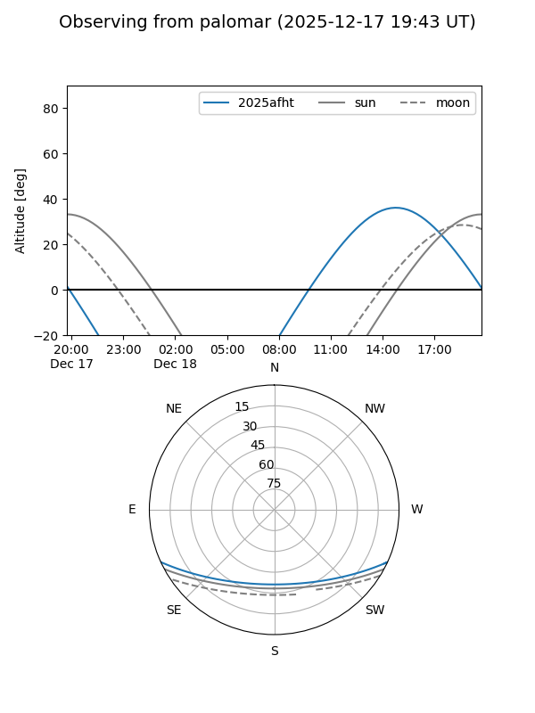
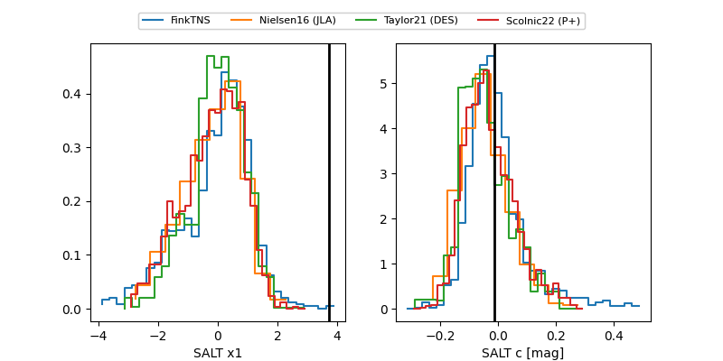

2025afht
Target 2025afht at 2025-12-18 15:52
Aliases and brokers:
FINK: fink-portal.org/ZTF25acgfmcl
Lasair: lasair-ztf.lsst.ac.uk/objects/ZTF25acgfmcl
ALeRCE: alerce.online/object/ZTF25acgfmcl
TNS: wis-tns.org/object/2025afht
YSE: ziggy.ucolick.org/yse/transient_detail/2025afht
alt names
ZTF25acgfmcl (ztf,fink_ztf)
2025afht (tns,yse)
Coordinates:
equatorial (ra, dec) = 191.8081,-20.35089
equatorial (HMS+DMS) = 12:47:13.94,-20:21:03.19
galactic (l, b) = (301.5946,+42.50994)
Photometry
last ztfg=19.32, ztfr=19.30
1 ztfg, 3 ztfr detections
Lightcurve

Visibility


Additional plots
